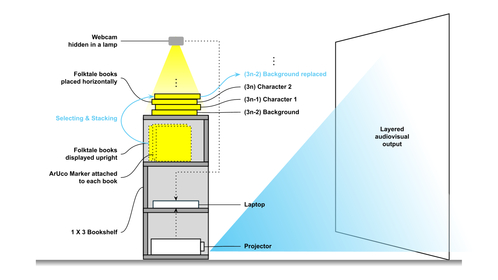

✦ Jeon Stack
Ever think of what Cinderella will talk to Ejsa if they ever met?

Overview
Jeon Stack turns Korean folktales into a hands-on storytelling system where the story changes based on how you stack the books.
Instead of reading stories linearly, users physically stack unmodified folktale books on a bookshelf.
The system responds by generating a real-time audiovisual scene — complete with animated backgrounds, character actions, synthesized dialogue, and dynamic world transitions
The Problem
This is the project I worked on during my Korea Exchange program on Fall 2025. I approached this project with only one question: "How to turn Korean culture into a material for tangible media design?"
As the question suggested, two problems I need to solve are:
- The material has to be really Korean in the form of visual design, language, and cultural values
- It must be engaging and fun for the user to interact with
The Solution
My team decided to use Korean folktales as the material for the project as it satisfies all the reqirements: it has Korean significant visual design, told in Korean language, and reflects Korean cultural values.
After deciding on the material, the next step was to figure out how to turn these stories into an actual character-driven experience.
And that was how we come to the final question: "If we were able to make a space where all the characters from differents folktale stories come together and talk and interact, how would that look like?". That is the whole ideas behind JeonStack.
Characters' characteristics and behaviors are based on how they are portrayed in the original folktales. After defining the characters, we moved on to create the system to bring them to a common space where they meet other characters in totally different contexts.
How It Works
Each book carries a fiducial marker that the system detects via an overhead webcam.
Webcam detects ArUco markers to identify which books are stacked and in what order, triggering a live audiovisual narrative in real time.
The order books are stacked determines the narrative: the first book sets the world, the second introduces a character, and the third triggers a dialogue exchange between two characters. Swapping books reshapes the story on the fly

Prototype Video
Acknowledgements
- Supervisor
- Professor Woohun Lee
- Co-author
- Intae Hwang
- Co-author
- Seunghwa Pyo
This project would not have been possible without the contributions of my KAIST professor and beloved classmates, whose collaborative effort brought JeonStack to life